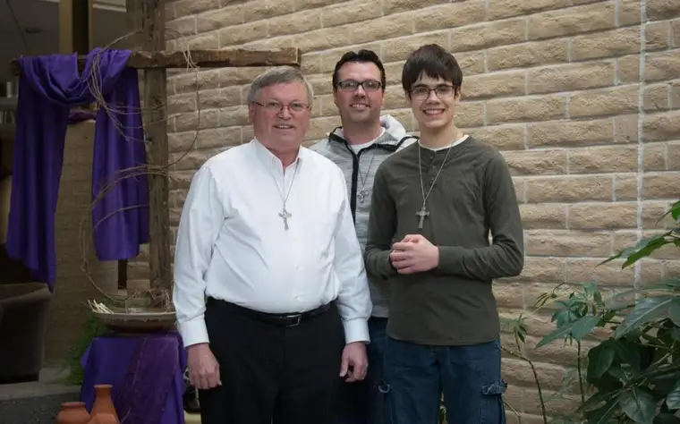

Deacon Bruce Dahl (left) and father-and-son team Brian and Keagan Walker, seen here at Church of the Nativity in south Fargo, represent three generations of Men of the Cross participants. Keagan’s maternal grandfather, Dan Gronso (not pictured), is also part of the group. Roxane B. Salonen / The Forum
FARGO — Bruce Dahl insists he’s “not a jewelry guy,” yet the large crucifix that hangs around his neck tells another story — of transformation, both within him and of others drawn to his accidental “Men of the Cross” ministry.
“I wondered what people would think if I wore it all the time,” he says of receiving the large crucifix necklace as a gift at his Catholic-deacon ordination Oct. 31, 2015. And yet the crucifix weighed heavily on his mind. After all, leaving behind his career as a medical doctor to take up the cross of Christ meant change, and the necklace representing Christ could help make it more tangible.
“After about six months, I got more comfortable with it,” he says, noting that simultaneously, something began happening, both interiorly and exteriorly. “I was more aware of Christ’s presence during the day. I found myself praying more, and if something upsetting would come up, I’d grab onto it and it would refocus things.”
Dahl also realized more intently how he was representing himself in public. “I felt more responsibility to always act like an ambassador or disciple for Christ.”
Wearing the crucifix also opened the door to religious discussions, becoming “a sign that says I’m not embarrassed to admit I’m a Christian.” Around this time, Dahl was talking with Janelle Schanilec at a reception at Fargo’s St. Mary’s Cathedral. She challenged him to give away his crucifix to anyone who asked about it.
“It seemed a little bit too radical,” he says, “but I also realized she’d made a good point.”
The crucifix contains a St. Benedict medal, blessed by a priest, to be effective against evil influences and offering fortitude in the everyday walk with Christ. The nonexclusive “band of brothers,” Dahl says, comprises Christian men with a common mission of “growing in their love of Jesus” and sharing it with others.
“Everyone is hungry for God,” says Dahl, noting how some people have reported a deep transformation after a Men of the Cross encounter, including a desire to go back to church. One woman told Dahl her husband’s behavior had improved so much since wearing it, she wanted to bring him cookies in thanksgiving.
Though encouraged to wear the crucifixes, there’s no pressure to wear them every moment, or always visibly. Dahl suggests the men ask God when and where.
Dahl went in search of a similar necklace, bought it and put it in his pocket. Each morning at daily Mass at Fargo’s Church of the Nativity, when someone asked about the crucifix, he’d offer the one in his pocket, then replace it with another.
One morning, seeing about a dozen men with the crosses after Mass, the Rev. Reece Weber suggested the name for the group, and it stuck. They began meeting every couple of months, praying together, then swapping experiences. So far, around 3,000 crucifixes have been dispersed, not only in the Fargo area but to men in other parts of the United States, several Canadian provinces and even Africa.
It’s grown beyond what Dahl says he could have imagined, all with a simple idea – witnessing to Christ through a piece of jewelry. “I’m not smart enough to figure this stuff out,” he says. “I’m just showing up and the Lord takes it from there.”
Brian Walker describes himself as an “in-the-closet” crucifix-wearer who sometimes has his cross under his shirt.
“Doing manual labor, it can bang into stuff,” he says, admitting that he appreciates the reminder that “Jesus is with us constantly.”
His son Keagan, 13, proudly wears the crucifix his grandfather, Dan Gronso, gave him for Christmas in 2017 every day.
“No one’s really talked to me in a different way, but a lot of people have asked if I’m going to be a priest for wearing it. That’s up to God,” Keagan says. “My favorite thing about it is if I’m worried, I can hold onto it, and I’m all right.”
Gronso appreciates the opportunity to share his faith with his grandsons, he says, and enjoyed a Men of the Cross retreat in Valley City, N.D., recently with the three generations.
“I don’t know if I can take credit (for Keagan’s enthusiasm),” Gronso says. “He’s the type of person that inspires me a lot of times, and I knew it wasn’t going to be a hard sell. He’s more involved in his faith than I was at that age.”
Gronso says in our current culture, men often avoid stepping up to their natural role as leaders.
“I think we need more of that in our society, to be able to lead not only our families but others.” Dahl says, “If you’re out and about and see someone wearing one of these, go talk to them. It helps us realize we’re not lone rangers out there.”
The attention the crucifixes generate do offer a telling — though somewhat disconcerting — statement, he adds.
“It’s abnormal for a guy to wear something like this, but if they wear a Twins or Bison jersey, no one thinks twice about it,” he says.
While some men have expressed concern that, by wearing the necklace, they’ll be accused of “putting on a show,” Dahl says, “I tell them, that’s the evil one discouraging you. We wear this not because we’re saints but because we’re sinners, being reminded that Jesus died for our sins.”
The simplicity of the crucifix resonates with men especially, Dahl says, because they are simple-minded in general.
“We put it on, wear it and go on with our activities,” he says. “We’re also built for communion,” he adds, with a need to “have a group of people journeying with you… to grow in the love of Jesus and share that with others.”
Like on Ash Wednesday when ashen crosses are pressed into foreheads, this visible sign can quietly witness Christ, Dahl says.
“We’re making a mistake as Christians not to identify ourselves,” he says. “We need to be doing a better job of evangelizing in that way and not be embarrassed.”
To learn more about the Men of the Cross ministry, contact Dahl at bruce.dahl@fargodiocese.org or 701-371-1923.
[For the sake of having a repository for my newspaper columns and articles, I reprint them here, with permission, a week after their run date. The preceding ran in The Forum newspaper on March 22, 2019.]